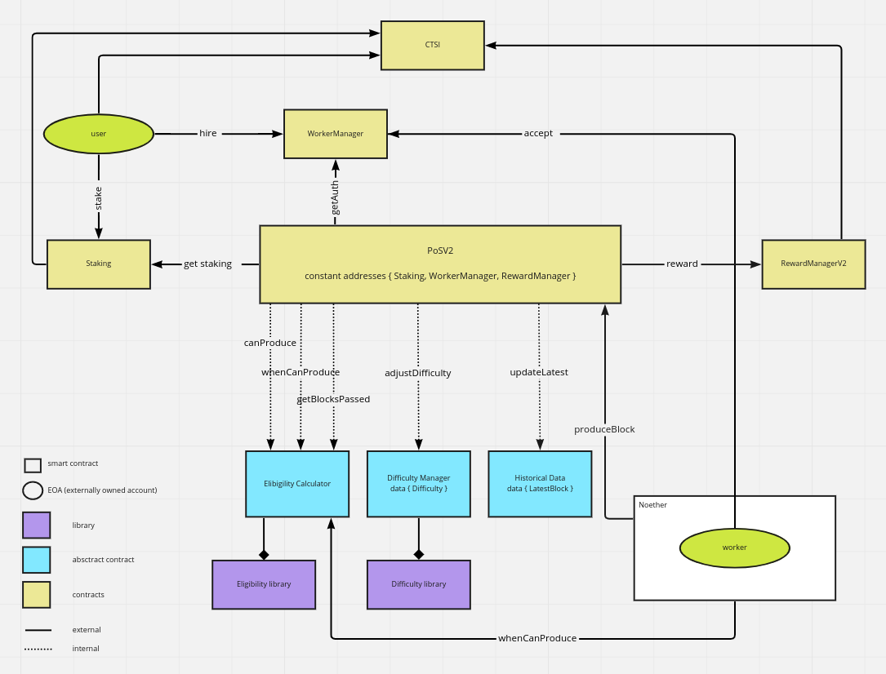
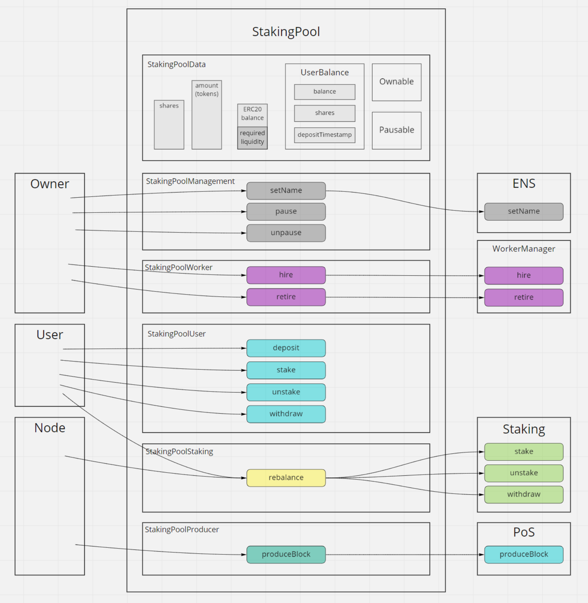

Cartesi Proof of Stake — ecosystem overview
Based on noether-docs/ knowledge base
CTSI holders lock tokens on Ethereum mainnet to produce blocks on Noether, Cartesi's sidechain. Producers earn CTSI from the Mine Reserve.
produceBlock() when eligibleDistinct from Cartesi Rollups (application logic in the Cartesi Machine).
┌─────────────────────────────────────────────┐
│ explorer (Next.js) — explorer.cartesi.io │
└──────────────────────┬──────────────────────┘
│ GraphQL + wallet
┌──────────────────────▼──────────────────────┐
│ subgraph (The Graph) — indexes events │
└──────────────────────┬──────────────────────┘
│ reads events
┌──────────────────────▼──────────────────────┐
│ Ethereum — pos-dlib + staking-pool + CTSI │
└──────────────────────┬──────────────────────┘
│ produceBlock / rebalance
┌──────────────────────▼──────────────────────┐
│ noether (Docker: cartesi/noether) │
└─────────────────────────────────────────────┘
| Repo | Role |
|---|---|
| pos-dlib | Core PoS contracts — stake, selection, difficulty, rewards |
| staking-pool | Public pools — shares, rebalance, commission |
| noether | Worker node — poll eligibility, produceBlock, rebalance |
| explorer | Staking portal UI — stake, pools, node management |
| subgraph | GraphQL indexer for explorer analytics |
StakingImplproduceBlock()RewardManager pays ~2,900 CTSI to the stakerDeposit CTSI → receive shares. Operator runs node. Rewards auto-compound; operator takes commission.
explorer.cartesi.io → Stake
Stake directly + run your own Noether node as worker. You fund node ETH for gas.
explorer → Node Runners → Create My Node
CEX / custodian (Binance, etc.) — outside the open-source PoS stack. Own rules and custody.
| Item | Value / note |
|---|---|
| Block reward | ~2,900 CTSI per block |
| Reward source | Cartesi Mine Reserve — see 2025 Transparency Report (59.83% of foundation CTSI deployed for staking rewards as of year-end) |
| Staking maturation | ~6 hours before stake counts toward selection |
| Unstaking maturation | ~48 hours before withdraw |
| Slashing | None — principal safe if node fails |
| Hardware | Minimal — probability depends on stake, not compute |
Networks: Ethereum mainnet (prod), Sepolia, local Hardhat (31337).
Holds staked CTSI. Receives CTSI rewards.
Example: your MetaMask wallet, or the pool contract
Authorized agent that submits produceBlock(). Spends ETH gas.
Example: Noether node's wallet (auto-created on first run)


--url)starting worker 0x… log), produce blocksSame flows as mainnet; no real money.
staking-pool or pos-dlib → yarn start (Hardhat on :8545, deploys contracts)noether → yarn start --account-index 1 (worker on account 1)pos-dlib → worker:hire, pos:create, fund RewardManager, pos:stakeyarn dev (MetaMask → localhost:8545, chain 31337)Fast iteration; reset Hardhat wipes chain state.
Node compromise: attacker can only steal node wallet ETH, not staked CTSI. CTSI controlled by staker wallet only.
Node deployment, selection math, share edge cases, explorer dev, subgraph schema
noether-docs — ecosystem knowledge base
← → or Space to navigate